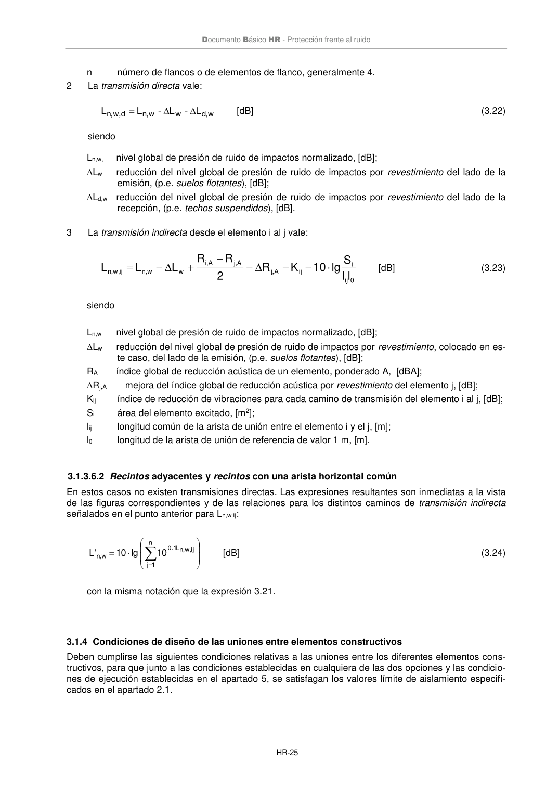

DB-HR Protección frente al ruido · edición 2019-12-20 · capa oficial
Documento DB-HR-oficial · SHA-256 del PDF a67baeca5138bb1f121f797d23a79a4557bd9ac4abacd954024893e05411eeab
Copia fiel del PDF fuente · Fuente oficial
Ficha de la disposición en la fuente oficial
Formatos: JSON del segmento · Markdown
3.1.3.6.1 Recintos superpuestos 1 El nivel global de presión de ruido de impactos normalizado viene dado por: + = = n 1 j ij, w ,n L 1, 0 d , w ,n L 1, 0 w ,n 10 10 lg 10 'L [dB] (3.21) siendo Ln,w,d nivel global de presión de ruido de impactos normalizado, debido a la transmisión directa, [dB]; Ln,w,ij nivel global de presión de ruido de impactos normalizado, debido a la transmisión indirecta, o por flancos, [dB]; Recintos superpuestos Recintos con una arista horizontal común Recintos adyacentes Documento Básico HR - Protección frente al ruido HR-25 n número de flancos o de elementos de flanco, generalmente 4. 2 La transmisión directa vale: w ,d w w ,n d , w ,n L L L L = - - [dB] (3.22) siendo Ln,w, nivel global de presión de ruido de impactos normalizado, [dB]; Lw reducción del nivel global de presión de ruido de impactos por revestimiento del lado de la emisión, (p.e. suelos flotantes), [dB]; Ld,w reducción del nivel global de presión de ruido de impactos por revestimiento del lado de la recepción, (p.e. techos suspendidos), [dB]. 3 La transmisión indirecta desde el elemento i al j vale: 0 ij i ij A ,j A ,j A ,i w w , n ij, w , n ll S lg 10 K R 2 R R L L L − − − − + − = [dB] (3.23) siendo Ln,w nivel global de presión de ruido de impactos normalizado, [dB]; Lw reducción del nivel global de presión de ruido de impactos por revestimiento, colocado en es- te caso, del lado de la emisión, (p.e. suelos flotantes), [dB]; RA índice global de reducción acústica de un elemento, ponderado A, [dBA]; Rj,A mejora del índice global de reducción acústica por revestimiento del elemento j, [dB]; Kij índice de reducción de vibraciones para cada camino de transmisión del elemento i al j, [dB]; Si área del elemento excitado, [m2]; lij longitud común de la arista de unión entre el elemento i y el j, [m]; l0 longitud de la arista de unión de referencia de valor 1 m, [m].
